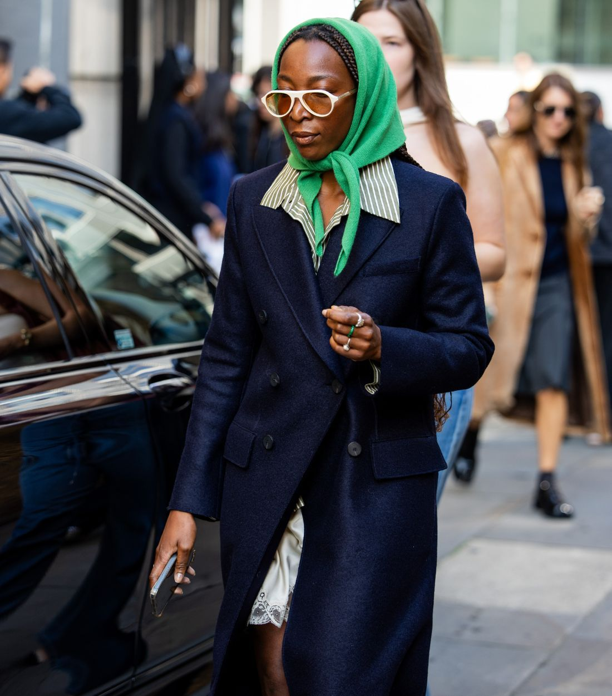
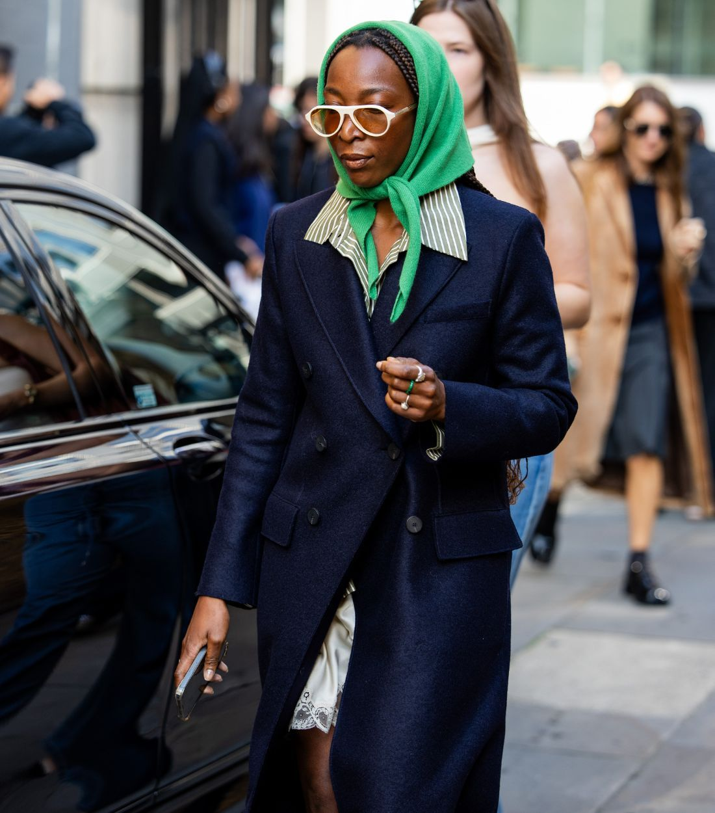
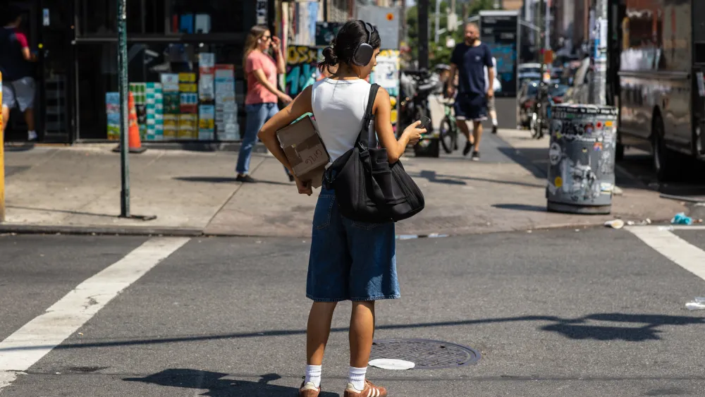

La moda urbana es un reflejo directo de la cultura local y las tendencias globales, fusionándose en looks únicos que encontramos en las calles. Desde los barrios bohemios de París hasta las vibrantes calles de Tokio, el street style nos muestra cómo las personas juegan con prendas, colores y accesorios para crear su propio estilo.
Esta diversidad es lo que hace que la moda urbana sea tan fascinante: nunca es estática y cambia con cada paso que damos en una nueva ciudad.
